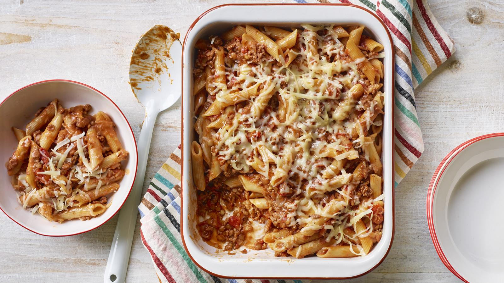

One Pan Pasta Bolognese

Description
A brilliantly easy one-pan budget bolognese that simmers at the same time as the pasta. Using lentils means you can use less mince, not only does this help cut cost, they are lower in saturated fats and a great source of fibre too.
This recipe is part of a Budget meal plan for four. In September 2023 this recipe was costed at an average of £4.39 when checking prices at four UK supermarkets
Ingredients
- 1 Onion finely chopped
- 250g Beef Mince
- 400g tin green lentils, drained
- 400g tin chopped tomatoes
- 250g pasta
- 1 beef stock cube
- 3 tbsp tomato puree
- half tsp mixed herbs
- 75g grated cheddar cheese
Steps
- Put the onion and mince in a wide-based saucepan, deep frying pan or sauté pan and fry for 5 minutes over a medium-high heat, stirring and squishing the beef to break up the mince. (There is no need to add oil unless your mince is extra lean.)
- Add the lentils, tomatoes and 700ml/1¼ pint water to the pan.
- Stir in the pasta, crumble over the stock cube and add the tomato puree and mixed herbs. Season with lots of ground black pepper
- Cover with a lid and bring to the boil, then reduce the heat and simmer for 18–20 minutes, or until the pasta is tender and the sauce has thickened, stirring occasionally. Stir more towards the end of the cooking time so the pasta doesn’t stick. (You may need to remove the lid to allow the sauce to simmer uncovered if the liquid needs to reduce a little more at the end.) Season to taste with salt and pepper
- Serve just as it is with cheese sprinkled on top, or transfer to an ovenproof dish, sprinkle with half the cheese and pop under a hot grill for 3–5 minutes or until the cheese melts. Serve the rest of the cheese separately or keep for another meal.